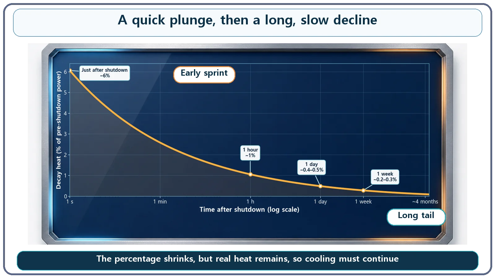

Heat Transfer & Thermal Hydraulics · 145
Slamming the Brakes, Then Coasting to a Stop — An Intuitive Look at the Decay Heat Curve
Like a sprinter's heart rate, decay heat plunges first and then settles into a long, gentle tail, which is why cooling continues for days to months.
After a reactor shuts down, decay heat falls very fast at first and then ever more slowly, leaving a long, gentle tail that lasts days to months. As a rough guide from the classic Way–Wigner approximation: about 6% of the pre-shutdown thermal power right after shutdown, about 1% after an hour, about 0.4–0.5% after a day. Small percentages can still mean tens of megawatts, so cooling has to continue.
Fast at first, slow later
Have you ever sprinted 100 meters flat out? Check your smartwatch or fitness app right after you cross the line and you'll see an interesting pattern. A heart rate that was hovering around 170–180 beats per minute plunges over the first minute or so, and then, at some point, the drop slows down noticeably. Even sitting down to catch your breath, your heart refuses to give up those last few dozen beats easily; near your resting rate it settles very slowly, almost reluctantly.
Fast at first, slow later. That two-stage decline looks remarkably like the way decay heat (often called residual heat), the heat a nuclear plant has to keep managing long after the reactor is shut down, fades away. Let's get a feel for how fast that heat actually falls, and in what shape: the decay heat curve.
Decay heat also slams the brakes, then coasts
A very quick recap first. Shutting down a reactor stops the fission chain reaction, but the heat doesn't cut off. While the reactor runs, many radioactive substances created by fission (fission products) build up in the core. Even after the chain reaction stops, those substances keep decaying on their own and giving off heat. That is decay heat. Why such heat exists is a story of its own; here we focus on the next question: how quickly, exactly, does that leftover heat decrease?
The answer resembles the heart-rate recovery pattern. Right after shutdown, decay heat falls very quickly, dropping noticeably within seconds and minutes. Once it has come down a fair way, the rate of decline slows sharply. Just as a sprinter's heart rate plunges and then resists falling much further near resting level, decay heat, after its steep early drop, keeps putting out a low level of heat along a very long, gentle "tail" lasting days to months.
The analogy stops at the shape, though. A person's heart rate usually reaches a clear floor, the resting rate, within minutes to tens of minutes, whereas decay heat never quite reaches zero, even after months or years; it lingers at very small values. We borrow only the form, "falls fast, then flattens out," not the timescale or the end point.
Why it falls fast at first and slowly later
There is a reason for this distinctive shape. The radioactive material that builds up in the core is not one or two kinds but hundreds of nuclides mixed together, with half-lives (the time for the amount to fall by half) ranging from under a second to decades.
Right after shutdown, plenty of very short-lived nuclides are still present and contribute heavily to the heat, but they decay away almost instantly, over seconds and minutes. So total heat output has to drop very fast at first. Once those impatient nuclides are mostly gone, what remains are the long-lived ones that were always decaying slowly and leisurely. When they take over heat production, the heat can only fall slowly, because their decay is slow to begin with.
In short, the steep early stretch is "the impatient nuclides rushing off the stage," and the gentle tail is "the patient ones staying on for a long time." Two very different crowds hand over the stage at different times, so the graph doesn't slide down at a steady rate; it takes on a two-stage shape, a steep start plus a long, gentle tail.
In numbers — about 1% within an hour
To get a feel for it, here are rough numbers. Using the classic approximation that reactor engineers have long used for hand estimates (the Way–Wigner approximation), decay heat after shutting down a reactor that has run for a long time follows roughly this course:
- Right after shutdown (seconds): about 6% of the thermal power just before shutdown
- After 1 minute: about 2–3%
- After 1 hour: about 1%
- After 1 day: about 0.4–0.5%
- After 1 week: about 0.2–0.3%
- After 1 month: about 0.15–0.2%
- After about four months: about 0.1%

Looking only at the numbers, you might think, "1%? Then it's basically cooled off." But there is a trap. The percentage is only a ratio to the thermal power just before shutdown; it doesn't mean the actual amount of heat is trivial. For a reactor running at about 3,000 megawatts thermal (MWth) before shutdown, about 1% an hour later still means roughly 30 megawatts of heat pouring out. Heat on the scale of what might supply hot water to several small towns is hiding behind a number as modest-looking as "only 1%."
That's why a plant keeps cooling long after shutdown
The very shape of this "steep start plus long tail" curve has a direct impact on how nuclear plants are designed and operated. The first few hours after shutdown are when heat falls fastest yet is still substantial, so cooling needs special care. In the much longer gentle tail that follows, cooling cannot simply end early: a lower level of cooling capability has to be maintained for days to months.
That is why nuclear plants have a residual heat removal system that keeps taking heat out of the core after shutdown. It forms a path: coolant carries heat from the core, passes it through heat exchangers, and finally rejects it to a place that can absorb it, such as seawater or river water (the ultimate heat sink). For the same reason, spent fuel just removed from a reactor can't be moved elsewhere right away; it cools for a long time in water-filled pools. Once you know the decay heat curve keeps going, gently but for a very long time, the question "why keep it underwater for so long?" answers itself.
One more common misreading. Decay heat continuing after shutdown is not a sign that the reactor has gone critical again or that fission has restarted. It is radioactive material that already exists decaying on its own, not a revived chain reaction. Nor does the curve suddenly drop to zero at some moment. It only keeps getting smaller; in practical terms it takes months to years to fall to a level negligible compared with the start.
Key takeaways
- Decay heat falls very fast right after shutdown, then the decline slows markedly and a low level of heat continues for a long time (days to months), much like a sprinter's heart rate: fast at first, leisurely later.
- The two-stage shape appears because the many radioactive nuclides in the core have widely different half-lives: short-lived ones vanish quickly, and long-lived ones slowly take over.
- As rough intuition: about 6% right after shutdown, about 1% after an hour, about 0.4–0.5% after a day, and about 0.2–0.3% after a week (approximate values, not design values).
- Small percentages can still mean tens of megawatts of real heat in a large reactor, so cooling must continue after shutdown through the residual heat removal system and spent fuel pools.
- Continuing decay heat does not mean recriticality or restarted fission, and the curve never drops abruptly to zero; it just keeps fading slowly.